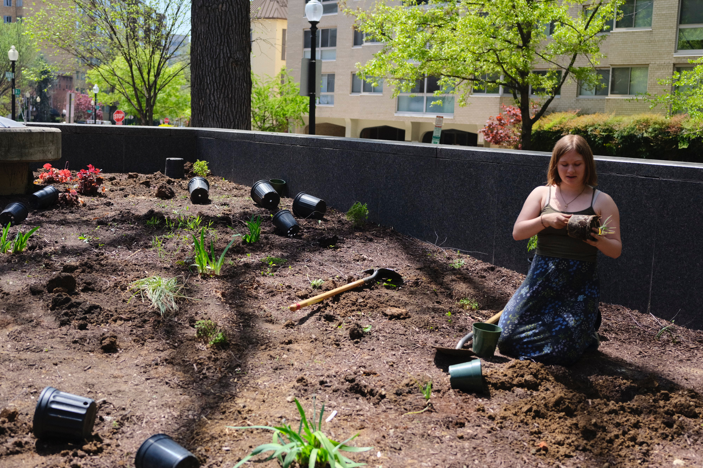
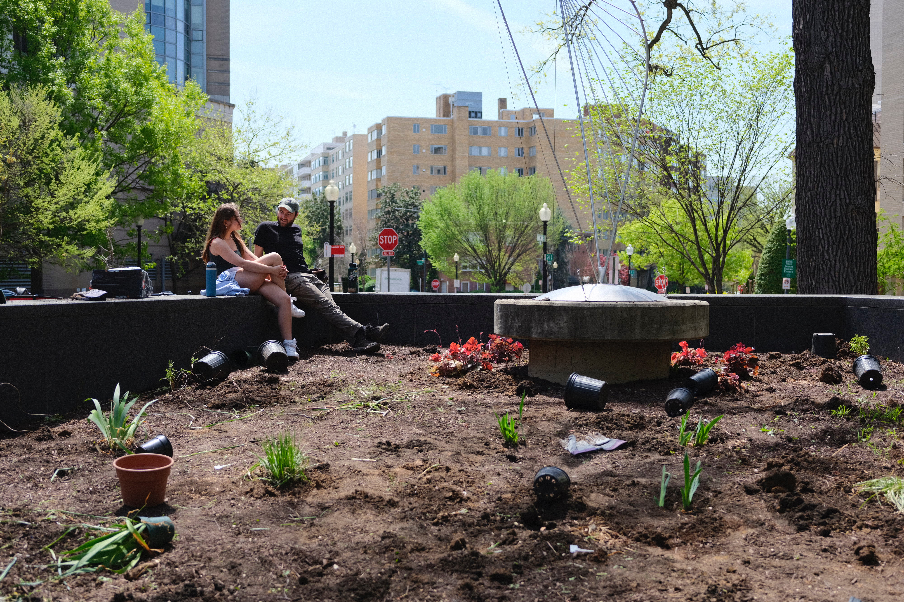
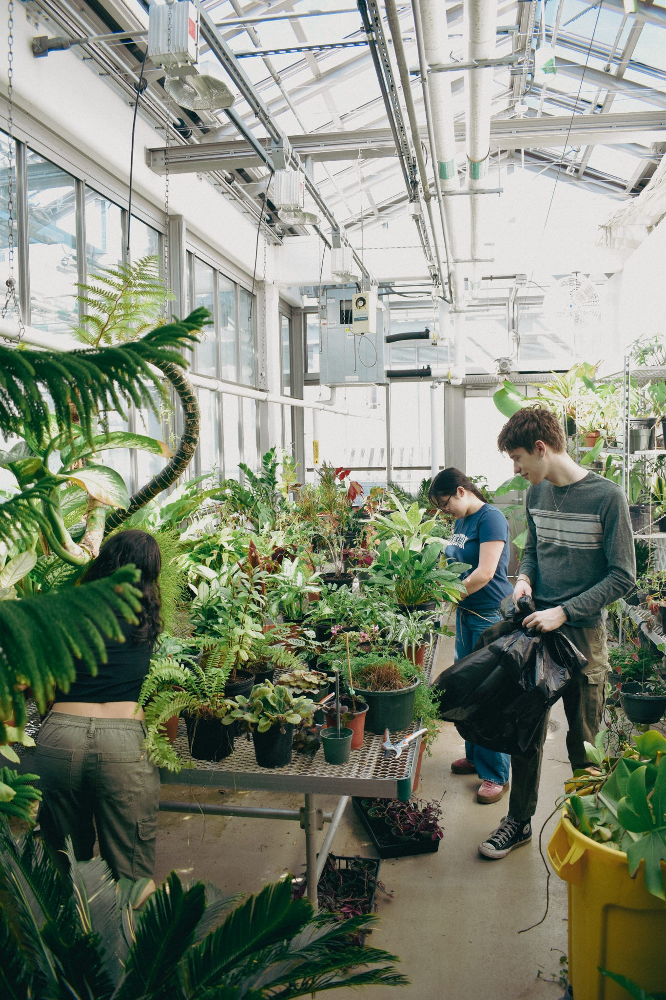
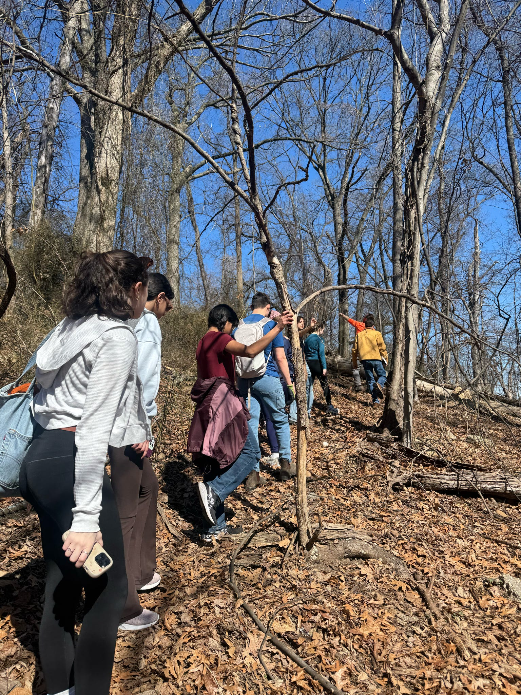
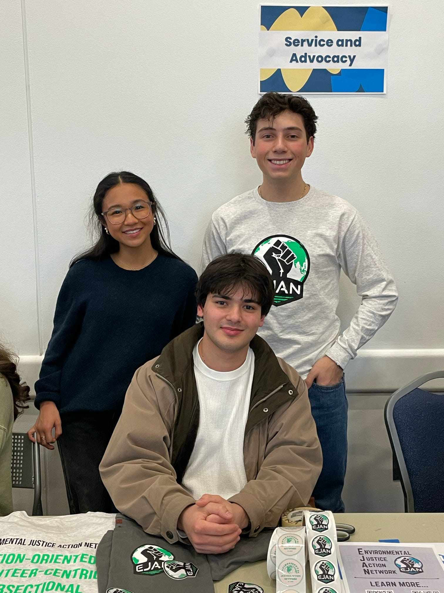
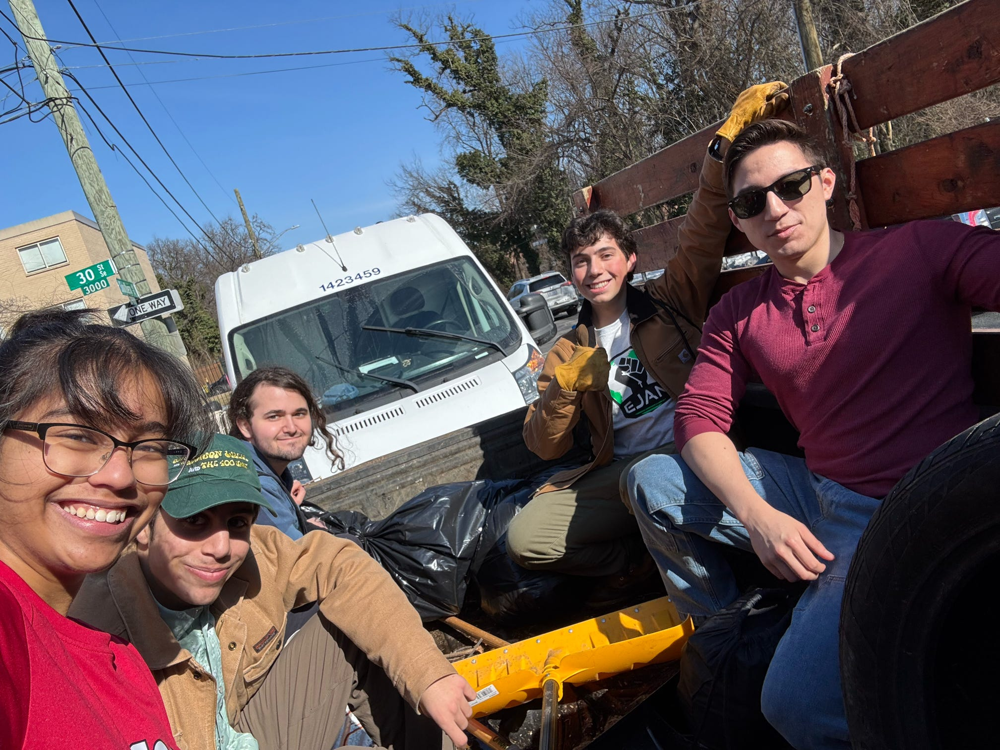

The Environmental Justice Action Network
Advancing Environmental Justice at George Washington University and in greater Washington, DC

EJAN is a grassroots student organization dedicated to ensuring that all D.C. communities, regardless of race, income, or geographic location, have equal access to a healthy environment and meaningful participation in the environmental decision-making processes. We work at the intersection of social justice and environmental protection, focusing on communities that have been disproportionately affected by environmental hazards. Through volunteering, policy and advocacy, and research, we strive to create lasting change.





Quick Links
Latest Project UpdateSee our ongoing work in environmental justice.
Upcoming EventsJoin us at our next general body meeting, subcommittee meeting, book club, or volunteer event.
Get InvolvedWe'd love to hear from you.